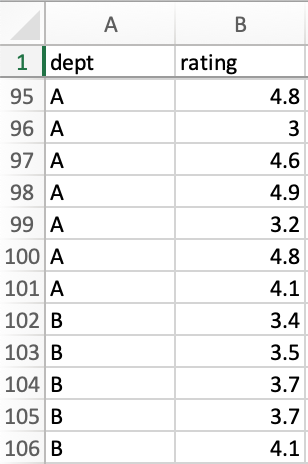

Hypothesis Testing Simply Explained
Even a Manager can understand!
When I was working for a software outsourcing firm, we had performance appraisal every six months. A lengthy process was applied to ensure fair recognition but there were always rumors on how employees reporting under certain departments or even under certain managers tend to have higher chances of promotion. The HR department made some simple calculations like averaging ratings of members under each manager/each department then compared the results, but is it enough to use that as an indicator that one department’s managers are easier on their employees than another? Similar problems in management when you need to validate a theory or a bias, can be addressed using hypothesis testing.
What is hypothesis testing then?

Source: https://xkcd.com/882/
A hypothesis test is a statistical test designed to verify if there is enough evidence in the data sample to reject or not reject an assumption. This assumption is called the null hypothesis, it is the status quo, meaning there is no difference among test groups, nothing interesting happens, any observed differences are by sampling or by errors. When examining the data and finding enough “evidence”, we can reject the null hypothesis and accept an alternative hypothesis. In the example of performance appraisal rating above, the null hypothesis states that there is no difference in the way different departments rate their employees, whereas the alternative hypothesis states that there is indeed difference in ratings among departments.
How can we find “evidence” to reject the null hypothesis?
This is where things get more complicated: we need to define and compute a test statistic and a p-value, then compare the p-value with a predefined threshold called alpha, commonly assigned with 0.05, to decide whether to reject or not reject the null hypothesis.
Source: https://knowyourmeme.com/memes/confused-nick-young/photos
How does it actually work?
Let’s take a closer look at our performance rating example. Our null hypothesis states that there is no difference in ratings between departments, in order to test this hypothesis, we define the test statistic as the difference in the average ratings among different departments.
To demonstrate the analysis, I generated 400 random ratings (continuous random values between 3 and 5) for 2 departments A and B with 200 records each in a way that ratings from department B are generally 0.2 higher than those of department A, then randomly drawn 100 records from each department and saved the dataset in a csv file.
I am using R to help with the test given its simplicity, more detailed instructions can be found below if you would like to re-produce the analysis.
Let’s load the dataset and use R’s lm function to conduct the test.
library(tidyverse)
library(broom)
# load the dataset
rating_df <- read_csv("rating_samples.csv")
# conduct the test
lm(rating ~ dept, rating_df) %>% tidy() %>% filter(term != '(Intercept)')
lm function will use dept A’s values as the baseline, each row is the result of the test whether there is a difference between a department’s ratings and the baseline department’s: if p.value is less than the significance threshold, we can reject the null hypothesis and accept the alternative hypothesis that there is difference between the two groups of data.
Given our p.value for deptB row is 0.000376, which is much lower than the significance threshold alpha=0.05, we have enough evidence to reject the null hypothesis and accept the alternative hypothesis that there is indeed a difference between ratings of department A and B.
Column statistic is our test statistic: the mean of deptB’s ratings is at approximately 3.618, whilst column term is the coefficient of department in a linear regression to predict that department’s rating, simply put: when a person moves from department A to department B, their rating will likely increase by 0.281.
Sounds like magic? I know!
In case you want to re-create the analysis above, please follow the steps below:
- Install RStudio
- Set the working directory to where your analysis files to be: Session > Set Working Directory > Choose Directory …
- Copy or create new
rating_samples.csvin the working directory, it should contain department name (dept) and their employee ratings (rating) - Copy and execute the script above in the Console panel
- If your
p.valuefor each department (deptX) is less than 0.05, you can reject the null hypothesis and accept the alternative hypothesis: that department’s ratings are different from the baseline department’s
Conclusion
The application of hypothesis testing in management is endless: we can use it to justify the investment in various marketing strategies or use it to validate the effectiveness of different product designs (A/B Testing) or use it to validate if there is a gender bias in recruitment, etc.
There are actually different types of hypothesis testing, each with different sets of assumptions, please do proper research before applying this test as using a wrong test will yield a misleading result.